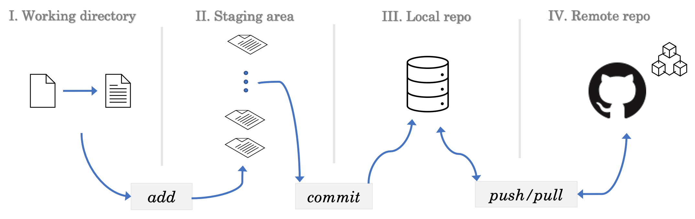
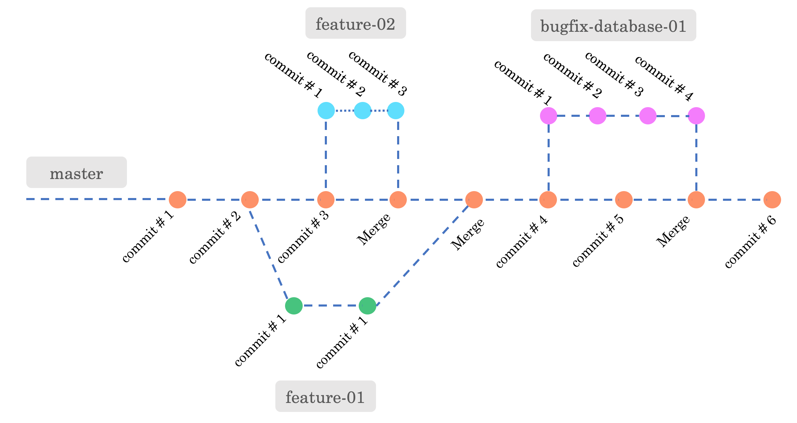

Development and deployment often involves managing changes to documents, computer programs, large web sites, and other collections of information. By managing I mean keeping track of changes, undoing changes and reverting back to previous forms, integrating changes while negotiating conflicts and so on. Popular source/version control systems widely used are CVS, SVN, Git, Perforce.
Git is a distributed source control system (not required to be decentralised). Massively scalable (because of its distributed nature) and open sourced, it was developed by Linus Torvalds. Most operations in Git are actually local and very few operations require network connection. Any version control system facilitates collaboration among the developers in large scale projects.
The two fundamental concepts needed to learn Git are the version control stages and the idea of branching. Fig. 1 illustrates the version control stages of the documents. Four stages of Git are listed below and refer to the figure caption for the explanation.

We have introduced the idea of $ git commit in Fig. 1. The second fundamental concept for understanding Git is how "commits" are tied together serially, one after another, to constitute a branch. Essentially, the commits compose the branches as shown in Fig. 2. When the project is created, the branch one starts with is traditionally called the master branch — the conventional name for the main or default branch. GitHub-created repositories, and Git installations configured accordingly, now default to main instead. This tutorial's hands-on examples use master throughout except in Section 2.3, where the rename to main is shown explicitly — so expect to see both names used below depending on context. During development new branches are created to carry out the development-isolated-from-the-master-branch and merge them later with the master when the objective is achieved. Fig. 2 shows such branches, namely feature-01 and feature-02. A branch that fixes some database bug is shown too (bugfix-database-01).

$ sudo apt update
# Install git
$ sudo apt install git
# Is git installed? Check version
$ git --version
# git requires two bits of information
$ git config --global user.name "Your Name"
$ git config --global user.email "youremail@example.com"
$ git config --global --list
# git should get back with list and names
Once Git has been set up locally, the next step is to create a GitHub account. After registering an account, the next step is to generate a token (classic); GitHub has deprecated password-based authentication and now recommends token-based authentication instead. There are primarily two ways to manage repos on GitHub: either with tokens or with SSH keys. In this tutorial we shall follow the token based approach. Remember, while pushing your code to GitHub you will need to present the token string in terminal for authentication. Hence preserve it safely — you need to use the token string just like your password.
In summary:
You can create a remote repo on GitHub, add a README.md, and then clone it to your local machine as follows.
$ git clone https://github.com/<username>/<repo-name>.git
$ cd repo-name
# you will notice the hidden .git folder inside
$ git status # check git status
# nothing untracked at this point
$ echo "Hello World" > file.txt
$ git status # what do you see?
# Add the changes to staging area
$ git add file.txt # alternative commands: git add -A or git add --all
# Commit the changes to local repo
# A commit needs a message; the first -m is the short subject line and the
# second -m (optional) adds a longer description below it.
$ git commit -m "Created file.txt" -m "Some description"
$ git push
# At this point the system will ask you
# username -> provide your GitHub username
# password -> provide the token stringWhile writing this tutorial it is observed that cloning private repo is also possible with tokens. One needs to enter username and password (i.e., token string) for authentication. Authentication will also be necessary for pushing any changes from local to GitHub cloud.
Remark #1. If push fails, or cloning of private repo faces issues, make sure your password keychain is not preserving any old login credentials. In such case you may want to delete such credentials if you don't need them anymore.
Remark #2. Always note the GitHub config details with $ git config --list. The user.name and user.email will decide which GitHub account is pushing the changes to the cloud, not the account credentials you used to login (important in case you use multiple GitHub accounts on the same machine).
# Make a project directory and place yourself inside it
$ mkdir repo-demo && cd repo-demo
# Add some files if it is an empty project
$ echo "# demo repo" >> README.md
# Start version control with git
# Initialize the .git folder inside repo-demo
$ git init
$ git status # all the untracked changes will be visible
$ git add README.md # commands: git add -A or git add --all
$ git commit -m "Created README.md" -m "Some description"
$ git push origin master
# You will get error!!! The remote is not set up.
$ git remote -v # Nothing will show up
That means, you need to create an empty project on GitHub with the same name as that of your current project directory on our local machine, i.e., repo-demo in our case. Once created we can set up the remote first. Next, we should be ready to push the local files to GitHub cloud. Check the codes below.
# Create a repo on GitHub with the same repo name, i.e., "repo-demo".
# Add this remote repo as follows.
$ git remote add origin https://github.com/<username>/<repo-name>.git
$ git remote -v # You can view remote origin
# On your machine the default git branch is "master"
# GitHub has decided to call default git branch as "main"
# Hence, it helps if we locally rename "master" to "main"
$ git branch -a # check all branches first
$ git branch -M main # rename now
# Next, let us push the local files. Note the branch is now "main", not "master" -
# the rename above means "git push -u origin master" would fail here.
# You need to authenticate with username and token-as-password in the following command.
$ git push -u origin main
Note that $ git push -u -f origin main also works, where -f is a forced push that overwrites whatever is already on the remote branch. Use it with care — a forced push can discard commits that collaborators have already pushed, so it should not be your default choice; the plain git push -u origin main above is enough here, since the remote branch does not yet exist.
What does the -u flag do? It sets the remote upstream. That means, if you need to push any further changes, just typing $ git push will be enough in the subsequent commands. No need to type out the full command $ git push origin main.
Same workflow like before.
$ cd existing-repo
# Set an empty project on GitHub with the exact name "existing-repo"
$ git remote add origin https://github.com/<username>/existing-repo.git
$ git push -u origin master
We shall start with branch creation and switching branches. Next, we shall discuss how to merge the branches. The following hands on examples demonstrate the concepts.
# Create the project
$ mkdir demo-branching && cd demo-branching
$ echo "# demo repo" >> README.md
# Initialize the .git folder inside demo-branching
$ git init
# Default branch is master.
$ git branch # The current branch is highlighted with star
# Create a new branch (-b flag) and move onto it
$ git checkout -b feature-01
# Alternatively, if you are on master, the following will do -
# $ git branch feature-01
# Switching branches
$ git checkout master # back to master
$ git checkout feature-01 # (type "fea" then press Tab to let the shell autocomplete the branch name)
# Merging branches
# Stay on feature-01, edit the README.md adding a few lines.
$ git status
$ git add README.md
$ git commit -m "Updated Readme"
# Switch onto master
$ git checkout master
# Check the difference between master and feature-01
$ git diff feature-01
# Merge master with feature-01
$ git merge feature-01
# Check the status
$ git status
The next example demonstrates how to handle pull requests using GitHub. Managing pull requests is essential if you intend to collaborate on software development. In such a case multiple groups of developers build separate parts of the codebase, generate pull requests and finally merge them. The small example below introduces you to the essential idea.
# How to handle pull requests on GitHub?
$ git checkout -b feature-02 # create a new branch
# Make some new changes.
$ echo "## Some new changes " >> README.md
# Try to push the new changes.
$ git push # you will receive an error! Why?
# Set the remote upstream on GitHub (add the origin).
# ... (Hint: refer to Section 2.3 or 2.4)
# Then push
$ git push -u origin feature-02 # uploads the branch; GitHub will then offer to open a PR for it
# Move to the GitHub website to handle the merging of the pull request
# Click on pull request and you will be able to see the following option
# Merge "base branch <- feature branch"
# Choose: Create a pull request
# The feature-02 is merged with the main branch on GitHub.
# How to update the changes on your local machine?
# Do the following locally.
$ git checkout master
# Now, pull the changes from GitHub.
# If upstream is not already set up, name the remote and branch explicitly:
$ git pull origin master
# ... if the upstream is already set up, this alone is enough:
$ git pull
# We are done with the feature branch.
# But it will still be there though you do not use it.
# You can delete the branch if you wish.
$ git branch -d feature-02 # (type "feature" then press Tab to autocomplete)
# Confirm the deletion ...
$ git branch # check the final status